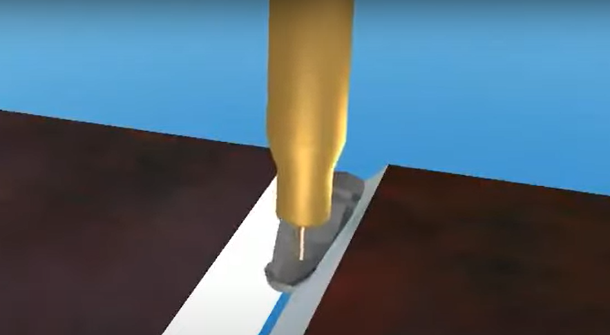
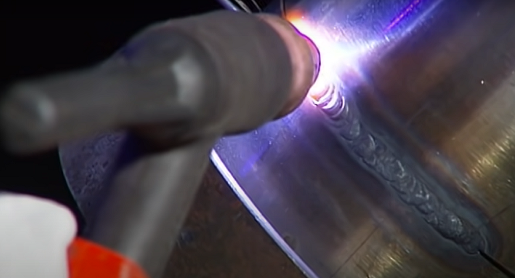

PROCESO DE SOLDADURA
- ARCO
- SOLDADURA TIG
- MIG/MAG
PROCESOS QUE USAMOS
La soldadura se refiere a la unión o fusión de piezas mediante el uso de calor y/o compresión para que las piezas formen un continuo. La fuente de calor en la soldadura suele ser una llama de arco producida por la electricidad de la fuente de potencia de soldadura. La soldadura basada en un arco se llama soldadura por arco.
METODOS DE SOLDADURA
ARCO DE BARILLA
El proceso más antiguo, más conocido y todavía bastante común es la soldadura manual de metal por arco MMA, que se suele usar en lugares de trabajo de instalación y sitios al aire libre que exigen una buena accesibilidad.
SOLDADURA MIG/MAG
El método de soldadura TIG más lento permite producir resultados de soldadura extremadamente finos y, por lo tanto, se utiliza en soldaduras que se verán o que requieren una precisión particular.
SOLDADURA TIG
La soldadura MIG/MAG es un método de soldadura versátil, en el que el material de relleno no necesita alimentarse por separado en la soldadura fundida. Por el contrario, el alambre pasa a través de la pistola de soldar rodeado por el gas de protección directamente hacia la soldadura fundida.